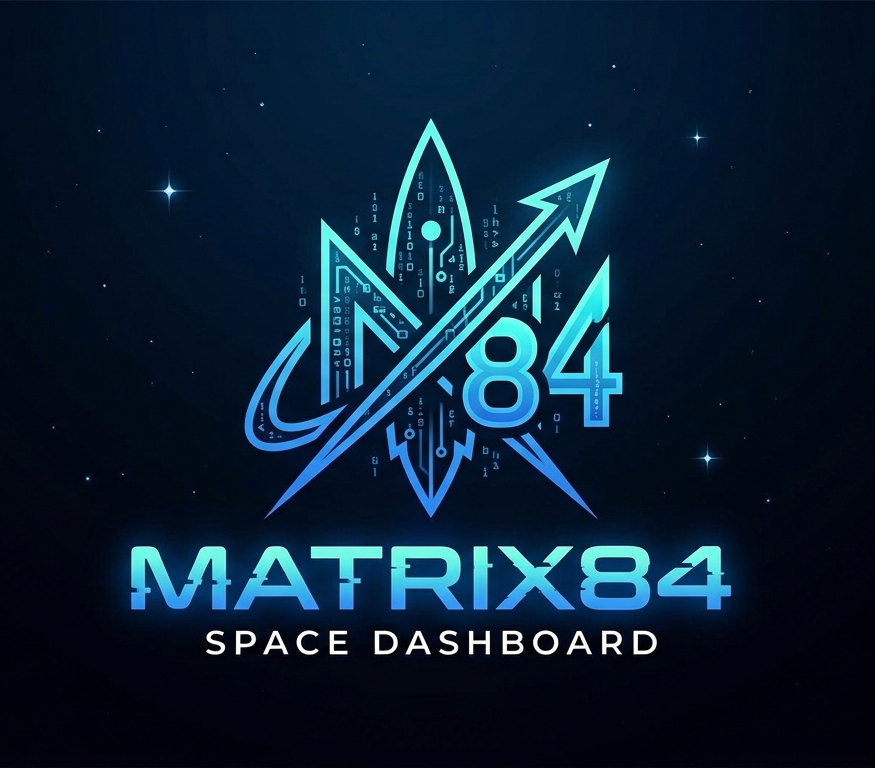

واجهة تفاعلية لمهمة Artemis II
يوم
ساعة
دقيقة
ثانية
جاري مزامنة وقت الإطلاق...
مهمة مأهولة تدور حول القمر وتعتبر خطوة حاسمة قبل الهبوط على سطح القمر.
الثقوب السوداء تتشكل عندما ينهار نجم ضخم داخل نفسه، وتملك نقطة مركزية عالية الكثافة.
أطلقت أول قمر صناعي (سبوتنيك 1) عام 1957، ليبدأ عصر الاستكشاف الفضائي.
المادة المظلمة (Dark Matter): معلومة للبشر؛ نحن لا نرى إلا 5% فقط من الكون (المادة العادية)، أما الباقي فهو مادة وطاقة مظلمة لا نعرف عنها شيئاً حتى الآن، تمدد الكون: المجرات لا تتحرك "داخل" الفضاء، بل الفضاء نفسه هو الذي يتمدد بينها كالعجينة، مما يجعل المجرات البعيدة تهرب منا بسرعة هائلة، عمر الكون: الكون عمره 13.8 مليار سنة، وأبعد ضوء وصل إلينا هو من "خلفية الميكروويف الكونية".
تلسكوب جيمس ويب: هو "آلة زمن" حقيقية، لأنه يرى الضوء الذي سافر مليارات السنين ليصل إلينا، فيرسم لنا شكل الكون بعد "الانفجار العظيم" بفترة قصيرة، مهمة أرتميس (Artemis): تهدف ناسا لإرسال أول امرأة وأول شخص ملون للقمر بحلول 2026، ليس للزيارة فقط، بل لبناء محطة فضائية (Gateway) تكون بوابة للمريخ، البحث عن الحياة: ناسا تركز الآن على أقمار المشتري (مثل يوربا) لأن تحت جليدها محيطات سائلة قد تحتوي على كائنات حية.
إعادة تدوير الصواريخ: سبيس إكس هي أول شركة في التاريخ تجعل الصاروخ (Falcon 9) يعود ويهبط عمودياً على منصة في البحر، مما خفض تكلفة الرحلات من مئات الملايين إلى مبالغ ضئيلة، ستارشيب (Starship): أكبر صاروخ صنعه البشر، هدفه جعل الإنسان "جنس متعدد الكواكب" عبر استعمار المريخ، ستارلينك: نشر آلاف الأقمار الصناعية الصغيرة لتوفير إنترنت فائق السرعة لأي بقعة على الأرض، حتى في وسط المحيطات.
الرصاصات الطائرة: هناك أكثر من 130 مليون قطعة حطام (من براغي صغيرة إلى بقايا صواريخ) تدور حول الأرض بسرعة 28,000 كم/ساعة. في هذه السرعة، قطعة بحجم "حبة الحمص" تضرب بقوة قنبلة يدوية!، متلازمة كيسلر (Kessler Syndrome): هي نظرية مرعبة تقول إن تصادماً واحداً في الفضاء قد يخلق آلاف الشظايا التي تصدم أقماراً أخرى، مما يغلق مدار الأرض تماماً ويحرمنا من الـ GPS والاتصالات للأبد، التنظيف الفضائي: هناك شركات بدأت تصمم "أقماراً مغناطيسية" أو "شباكاً عملاقة" لاصطياد هذه الخرده وإنزالها لتحترق في الغلاف الجوي.
استكشف فيديوهات المهمات الرسمية من ناسا
التعاليق 💬